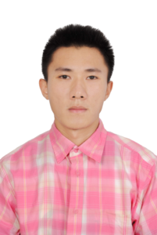

Members

Jason Jinrong LIU
Assistant Professor
Department of Robotics
Department of Electromechanical Engineering
University of Macau
Biography
Dr. Liu received his B.Eng. degree in Automation from Sun Yat-sen University in 2013, and his Ph.D. degree in Control Engineering from the University of Hong Kong in 2018 under the supervision of Prof. James Lam. Since 2022, he has been a faculty member in the Department of Robotics and the Department of Electromechanical Engineering at University of Macau, and is currently a tenure-track Assistant Professor. He is also an Honorary Assistant Professor at the University of Hong Kong and an IEEE Senior Member. He is an associate editor for IET The Journal of Engineering, an early-career associate editor for Franklin Open, a guest editor for the Journal of the Franklin Institute in 2025 and the IEEE Transactions on Industrial Cyber-Physical Systems in 2026. He is a finalist for the Guan Zhaozhi Award (CCC2026).
Research Interests
- Embodied AI for Robotic Systems
- Safety-Critical Control of Robotic Systems
- Autonomous Intelligent Unmanned Systems
- Networked Multi-Agent Systems
- Nonlinear Systems and Control
Contact
- Office E11-4080
- Tel +853 8822 4238
- Fax +853 8822 2426
- Email jasonliu@um.edu.mo